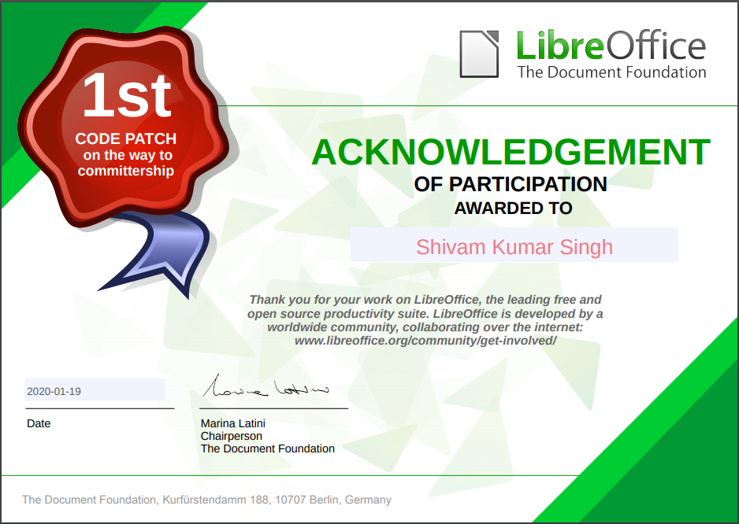
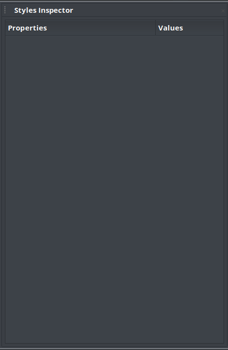
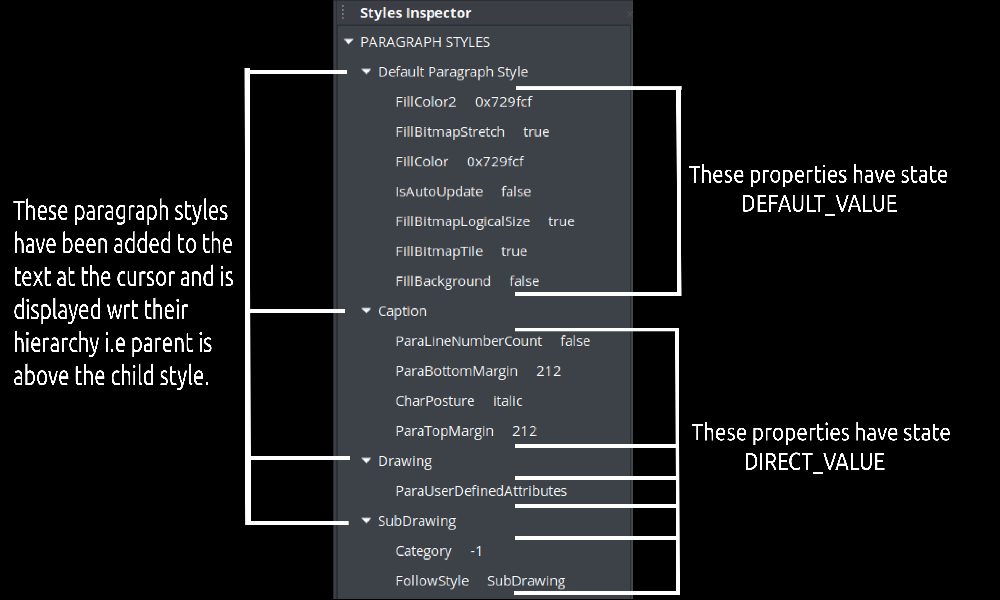
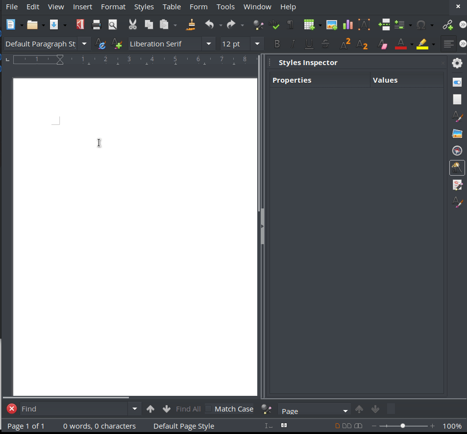
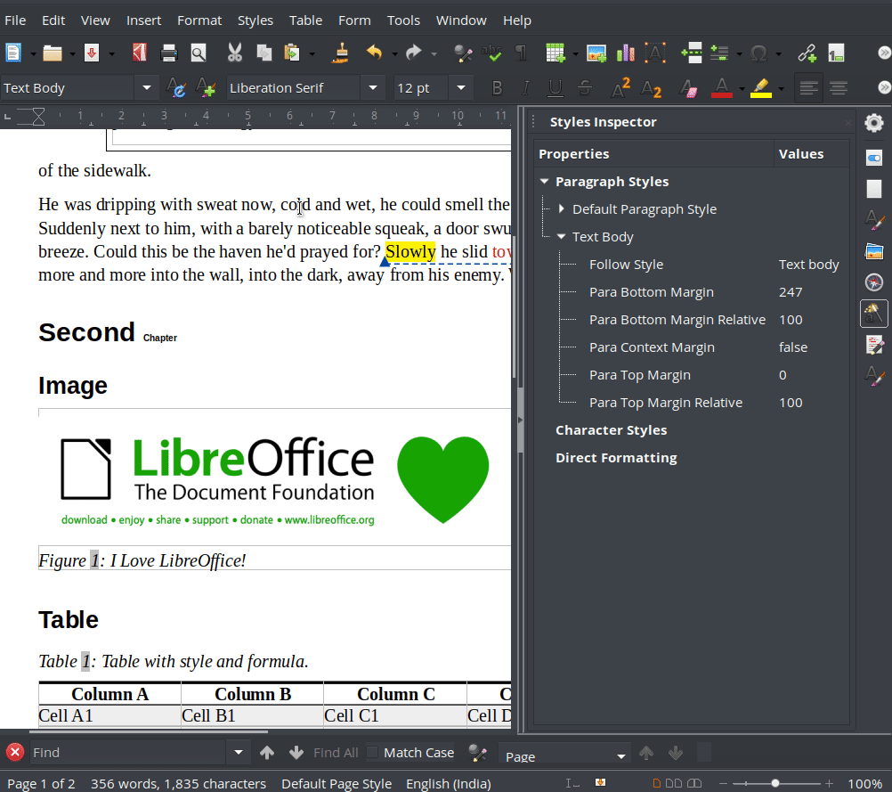

A new feature named "Styles Inspector" was requested by the design team at LibreOffice on Fall
of 2019. This project caught my attention as I felt out of
all the other projects this needs immediate attention. In
particular when you receive documents from other people, it
can be quite difficult to understand the applied formatting
and to fix issues around.
I write this blog with the purpose of my final report with a
slight glimpse of my journey during this summer. It’s been
quite a challenging experience, certainly more challenging
than I thought it would be when writing the proposal.
Regardless, this experience has taught me a lot and I hope
to continue learning and contributing to LibreOffice/open
source going into the future.
I had wanted to contibute in Open Source through GSoC since
long, this year i gave a very serious try. I chose
LibreOffice because the codebase was mostly in C++: the
language I am most familiar in. Most importantly GSoC is not
just about writing code, its about doing some significant
contribution in the organisation which in turns is
contributing to the world. What could have been better than
LO for that? the best alternative to MS Office which
provides its awesome tools completely for free!!
I started getting involved with the organisation in around
Feb 2020. Downloaded the code base in my local machine.. set
up logerrit..find up a bug to solve from Bugzilla.. and you
are good to go. With the help of Regina I was able solve my
first bug and LO greets me with this beautiful mail which
shows they take their contributors very seriously.

Gradually with every new bug fix, my confidence about the codebase increased and making propsal now seemed less difficult. I started discussing with my mentors how exactly would the Style Inspector function and according to that started looking into the codebase for similar functionality. You can check my propsal here. Also check out my timeline(top right) to know how i managed my time every week during the summer.
Working on the project was more challenging than i had
thought. The UI design of the the panel was completed soon
using Glade. My next patch was to make a property dump of
all the attributes for the text at the cursor. I had
presumed it to be completed in not more than 7 days, but
during this time, a major cyclone Amphan hit most eastern
part of India including my region which led to electricity
and data blackout for about a week and i was totally cut off
from my project. Around three weeks had passed since the
community bonding period had started and i was stuck with
nothing more than this empty panel.

I started losing confidence and a point came where it seemed
I would fail. Fortunately my mentor Mike knew about this
issue and helped me with a lot of code pointers. Life came
back to the project and the property dump was finally
completed. Yes, you could now see a beautiful list of more
than 170 properties about the text at the cursor in the
Styles Inspector!
The Inspector extensively uses the UNO API to detect the
style attributes. Whenever we click on any text first for
all the attributes it is checked if it was directly
formatted or is a result of any applied Paragraph Style or
Character Style. The hierarchy followed in terms of style
attributes by UNO API is :-
Accordingly for each style at each level it was checked if
its property state was beans::PropertyState_DIRECT_VALUE or
beans::PropertyState_DEFAULT_VALUE, a property will be
displayed in each category(DF, CS, PS) only if it is a
DIRECT value and all the styles with DEFAULT state will be
included in Default Paragraph Style as that is the "mother"
of all styles. The Inspector would now look like this

The nodes are divided into three types: Category, Simple and
Complex. Category type nodes are basically the main
categories (PS, CS and DF). Complex properties are those
which are styles and have properties defined for them.
Simple nodes are the properties having some value stored in
them. Currently only PS, CS and DF categories are present in
the Inspector but one can add say "Table Styles", "Frame
Styles" or any other style according to will following the
struct.
The next milestone was to grey out the properties which are
directly modified at a category but are overriden by any
different value defined at some higher level.

The most significant patches merged during the GSoC phase
are:-
Check out all the merged patches
here. The final work product :)

A couple of bug fixes remain to be solved. When opening the SI for the first time the panel shows empty, because the cursor is not really on any text. At such situations the panel should instead show the default state(Default Paragraph Style in PS, empty CS and and empty DF). Also I have added a patch for adding shortcut command to launch the SI which is currently under Review and should be merged soon, following which the proper icon for SI should be merged. The whole list of bugs that should/may be solved are located at bugzilla
At last, I want to thank my mentors Tomaz, Mike and
Heiko for their continued support, without which it
would have been impossible to make any progress. I also
extend my gratitude to Caolan for always replying back
to my UI related mails :-).
It was fun working with you awesome people together on
this project.
Feel free to follow me on GitHub or contribute to
LibreOffice.
What do you feel about this blog? Share your feedback
here.